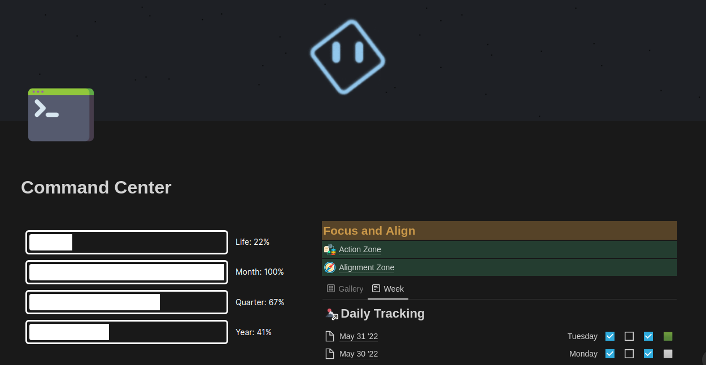
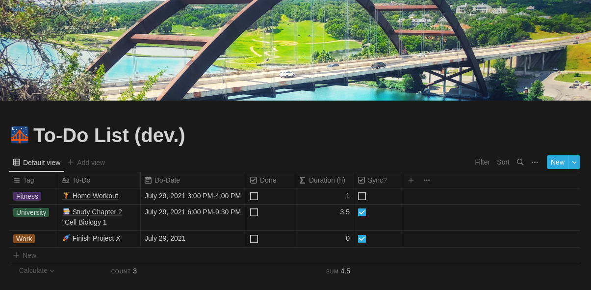
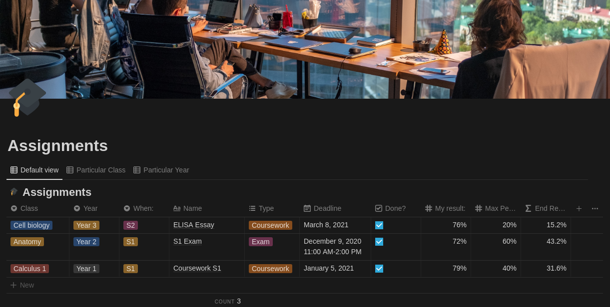
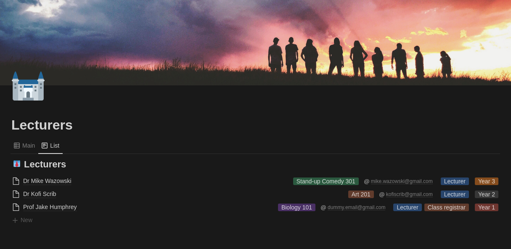

Excelling at university the proven and easy way - with Notion
Aug 14 '21 • Written by Yassen Shopov
📖 8 minute read
I’ll start this article with one big, and I mean BIG, caveat:
You don’t need to overperform in university/school if you want to feel accomplished in life.
Grades and diplomas can only reflect a very temporary and short-lived moment of your academic life and are not indicative of your personality, skills, potential. I personally try and perceive my university studies as a means to an end, in my case the “end” being finding a job in my field and getting some cool skills under my belt.
Now that we made this clear, there are still plenty of healthy reasons for one to pursue academic success. Going after good grades can lead you to develop good self-discipline and will expand your knowledge base vastly.
In order to pursue academic success and maintain a healthy relationship with your work ethic, some extra effort is needed tho. Many people find it easiest to choose one of two routes:
Go all-in when studying and burn out
Leave studying as your last priority and procrastinate
As you may guess, neither of the two scenarios is particularly optimal. I was heading down Route 1 at the beginning of my academic journey (I’m currently a Year 3 Biomedical Engineering student), and I know for sure that my burnout period would be long and heavy.
This is when I found a tool that basically helped me put all my uni work in check, and finally gave me the peace of mind that I oh-so-needed.
This tool, as you can tell from the title, is Notion.
Notion is an all-in-one workspace environment where you can manage everything from your schoolwork, projects, personal data, to artistic endeavours, life plans, essays. Basically, if you can visualize it and can think of a way to manage it, it can be done in Notion. So far my personal Notion workspace has only been expanding, and these are just some of my projects so far:
Personal finances system
Art business management system
Uni classes management system
Life philosophy
Networking management
To-do list + Calendar
Blog Creation Pipeline
Personal Note-taking system
Command Center for all my systems
But, coming back to the roots, the backbone of my whole system was my university management system. It helped me finish the year with Distinction 2 years in a row while maintaining my mental health intact and allowing me to manage side-hustles successfully. So I want to share the 3 templates that help me manage my university-related work, and I’m sure you can modify them to your own liking easily.
Each of the three links is available separately for you to duplicate in your own Notion account.
Calendar of events
University is just one big schedule, isn’t it?
We got lectures, deadlines, exams, and tests, and all of them occur on the same plane of existence - your calendar. Now, it may seem counter-intuitive to use Notion for a calendar of events when you have, well, Google Calendar. But Notion is much better at differentiating between different tasks.
You can tag them, use separate properties, color them. And then the best part: you can use different views of the same database.
The database here is a snapshot of one of my busier months in uni. What’s the cool thing though? All my university tasks are on the same list as my other tasks, but I have made a filtered list here to only include the uni ones. You can make a similar one, where it only includes things with due dates, like assignments. Or you may want a separate view with only your face-to-face lectures there. The potential is unlimited.
Assignments
To expand on the previous template, we will get to the numbers that matter.
At the start of the year, if you’re lucky of course, your university lecturers will kindly let you know of your up-and-coming assignments and assessments. This is a key point because the information itself is key. Now you can visualize the result you want to have at the end of the year, it may be just enough to pass, it may be to be the top of your class, doesn’t matter. The point is to be able to reach a goal of your own making. And if you know how much each assessment will weigh, you can gauge how important it is, and thus - how much effort and time you should put in.
Because let’s be real, nobody should and would be a student 100% of the time, and in order to get that bonus time for other activities, we should try to minimize the input while maximizing the output, a.k.a our results.
This table over here lets you add in all your assessment for all classes and years of your degree, and then filter through them to keep track of separate classes. By doing this you will be able to see both your current progress and your general results at the same time, so you can better decide where to prioritize your studying.
Contacts and details
Last but not least, this template is supposed to be a complement to the ones above. It isn’t directly related to your studies, but in the rare cases when you need it, you will find it really helpful, possibly life-saving.
The table in question is of all the relevant university staff that you may need to contact during or possibly even after your studies.
It helps you keep track of their email and other contact information, as well as relating them to the classes they teach because let’s be real, this information fades with time.
When face-to-face teaching becomes realistic again, you can add in their office number, in case you need to go to their office hours. And while we’re still in the Zoom era, you can add in any relative links and passwords there as well.
Such an information bank may seem excessive and not too practical, but for the few cases where you may need it, it will be a life-saver. Even more so if you happen to be a class representative that needs to stay on top of their correspondence.
[10:20]
by Mayer Adelberg